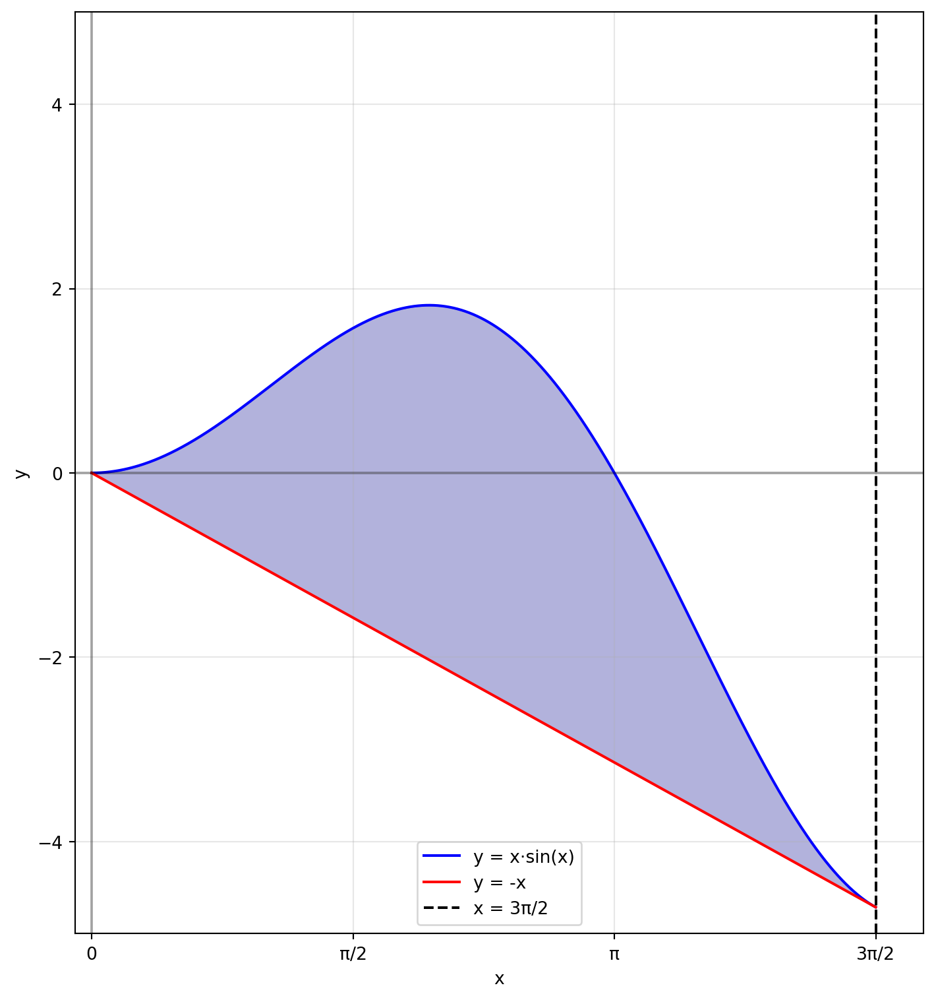

Solution. En posant \(u=x^2+1\), on obtient que \(\frac{\,du}{2}=x\,dx\). Par conséquent, \[\int x(x^2+1)^{2007}\,dx=\frac{1}{2}\int u^{2007}\,du=\frac{1}{2}\cdot\frac{u^{2008}}{2008}+C=\frac{(1+x^2)^{2008}}{4016}+C.\]
\[\int x\sqrt{x-1}\,dx\]
Solution. En posant \(u=x-1\), on obtient que \(\,du=\,dx\). Aussi, \(x=u+1\). Par conséquent, \[\begin{align}
\int x\sqrt{x-1}\,dx&=\int (u+1)\sqrt{u}\,du \\
&=\int u^{3/2}\,du+\int u^{1/2}\,du \\
&=\frac{u^{5/2}}{5/2}+\frac{u^{3/2}}{3/2}+C \\
&=\frac{2(x-1)^{5/2}}{5}+\frac{2(x-1)^{3/2}}{3}+C
\end{align}\]
\[\int\frac{e^{2x}\,dx}{\sqrt{1+e^{2x}}}\]
Solution. En posant \(u=1+e^{2x}\), on obtient que \(\frac{\,du}{2}=e^{2x}\,dx\). Ainsi, \[\int\frac{e^{2x}\,dx}{\sqrt{1+e^{2x}}}=\frac{1}{2}\int\frac{\,du}{\sqrt{u}}=\frac{1}{2}\cdot\frac{u^{1/2}}{1/2}+C=\sqrt{1+e^{2x}}+C.\]
\[\int\frac{\cos(x)\sin(x)\,dx}{2+\cos(2x)}\]
Solution. Remarquons en premier lieu que l’intégrande est composée de fonctions trigonométriques d’argument différent. Pour réussir à intégrer cette fonction, il serait souhaitable que les fonctions trigonométriques présentes aient le même argument.
Première méthode: L’argument commun des fonctions trigonométrique de l’intégrande est\(x\).
Il nous faut ici utiliser une formule pour exprimer \(\cos(2x)\) est fonction de \(\sin(x)\) et de \(\cos(x)\). On sait que \(\cos^2(x)-\sin^2(x)=\cos(2x)\). Par conséquent, \[\int\frac{\cos(x)\sin(x)\,dx}{2+\cos(2x)}=\frac{\cos(x)\sin(x)\,dx}{2+\cos^2(x)-\sin^2(x)}.\] En posant \(u=2+\cos^2(x)-\sin^2(x)\), on trouve que \(\,du=-4\cos(x)\sin(x)\,dx\). Ainsi, \[\int\frac{\cos(x)\sin(x)\,dx}{2+\cos^2(x)-\sin^2(x)}=-\frac{1}{4}\int\frac{\,du}{u}=-\frac{1}{4}\log(2+\cos^2(x)-\sin^2(x))+C.\]
Deuxième méthode: l’argument commun des fonctions trigonométrique de l’intégrande est\(2x\).
On doit donc exprimer \(\cos(x)\sin(x)\) en fonction de \(\sin(2x)\) et de \(\cos(2x)\). Or, \(\sin(2x)=2\sin(x)\cos(x)\). Par conséquent, nous avons que \[\int\frac{\cos(x)\sin(x)\,dx}{2+\cos(2x)}=\frac{1}{2}\int\frac{\sin(2x)\,dx}{2+\cos(2x)}.\] En posant \(u=2+\cos(2x)\), on trouve que \(\,du=-2\sin(2x)\,dx\), et donc \[\frac{1}{2}\int\frac{\sin(2x)\,dx}{2+\cos(2x)}=-\frac{1}{4}\int\frac{\,du}{u}=-\frac{1}{4}\ln(2+\cos(2x))+C.\]
\[\int e^x\sin(x)\,dx\]
Solution. On pose \(u=e^x\) et \(\,dv=\sin(x)\,dx\). Ainsi, \(\,du=e^x\,dx\) et \(v=-\cos(x)\). Nous avons donc que \[\begin{align}
\int e^x\sin(x)\,dx&=\int u\,dv \\
&=uv-\int v\,du \\
&=-e^x\cos(x)+\int e^x\cos(x)\,dx. \qquad(\star)
\end{align}\] Il nous faut maintenant effectuer l’intégrale de la fonction \(e^x\cos(x)\). Encore une fois, on procède en utilisant la méthode d’intégration par parties. Posons \(r=e^x\) et \(\,ds=\cos(x)\,dx\). On obtient que \(\,dr=e^x\,dx\) et \(s=\sin(x)\). On a ainsi que \[\begin{align}
\int e^x\cos(x)\,dx&=\int r\,ds \\
&=rs-\int s\,dr \\
&=e^x\sin(x)-\int e^x\sin(x)\,dx. \qquad(\star\star)
\end{align}\] Nous voyons apparaître à nouveau l’intégrale qui est en fait l’inconnu de notre problème de départ. On pourrait penser que tout ce que nous avons fait dans ce problème jusqu’à présent est tourner en rond. Cependant, il n’en est rien de cela puisqu’en utilisant les équations \((\star)\) et \((\star\star)\), on obtient que \[\begin{align}
\int e^x\sin(x)\,dx&=-e^x\cos(x)+\int e^x\cos(x)\,dx & \qquad(\text{d'après}(\star)) \\
&=-e^x\cos(x)+e^x\sin(x)-\int e^x\sin(x)\,dx. & \qquad(\text{d'après}(\star\star))
\end{align}\] Ainsi, \(2\int e^x\sin(x)\,dx=-e^x\cos(x)+e^x\sin(x)\), d’où \[\int e^x\sin(x)\,dx=\frac{e^x}{2}\left(\sin(x)-\cos(x)\right)+C.\]
\[\int\arctan(x)\,dx\]
Solution. On pose \(u=\arctan(x)\) et \(\,dv=\,dx\). Ainsi, \(\,du=\frac{\,dx}{1+x^2}\) et \(v=x\). Nous avons donc que \[\begin{align}
\int\arctan(x)\,dx&=\int u\,dv \\
&=uv-\int v\,du \\
&=x\arctan(x)-\int \frac{x\,dx}{1+x^2}.
\end{align}\] En posant \(r=1+x^2\), on trouve que \(\frac{\,dr}{2}=x\,dx\), d’où \[\int\frac{x\,dx}{1+x^2}=\frac{1}{2}\int\frac{\,dr}{r}=\frac{1}{2}\log(1+x^2)+C.\] Ainsi, \[\int\arctan(x)\,dx=x\arctan(x)-\frac{1}{2}\log(1+x^2)+C=x\arctan(x)-\log\left(\sqrt{1+x^2}\right)+C.\]
\[\int\sin(\log x)\,dx\]
Solution. On pose \(u=\sin(\log x)\) et \(\,dv=\,dx\). Ainsi, \(\,du=\frac{\cos(\log x)\,dx}{x}\) et \(v=x\). Nous avons donc que \[\begin{align}
\int\sin(\log x)\,dx&=\int u\,dv \\
&=uv-\int v\,du \\
&=x\sin(\log x)-\int \cos(\log x)\,dx. \qquad(\star)
\end{align}\] Il nous faut maintenant effectuer l’intégrale de la fonction \(\cos(\log x)\). On procède encore en utilisant la méthode d’intégration par parties. Posons \(r=\cos(\log x)\) et \(\,ds=\,dx\). On obtient que \(\,dr=-\frac{\sin(\log x)}{x}\,dx\) et \(s=x\). On a ainsi que \[\begin{align}
\int \cos(\log x)\,dx&=\int r\,ds \\
&=rs-\int s\,dr \\
&=x\cos(\log x)+\int \sin(\log x)\,dx. \qquad(\star\star)
\end{align}\] Les équations \((\star)\) et \((\star\star)\) entraînent que \[\int\sin(\log x)\,dx=x\sin(\log x)-x\cos(\log x )-\int \sin(\log x)\,dx,\] d’où \[\int\sin(\log x)\,dx=\frac{x}{2}\left(\sin(\log x)-\cos(\log x)\right)+C.\]
Solution. On observe que le dénominateur s’annule lorsque \(x=1\). Ainsi, \(x-1\) est un de ses facteurs. En divisant \(x^3-x^2+x-1\) par \(x-1\), on obtient \(1+x^2\). Il existe donc des constantes \(A,B\) et \(C\) telles que \[\frac{1}{x^3-x^2+x-1}=\frac{A}{x-1}+\frac{Bx+C}{1+x^2}.\] On trouve que \(A=1/2\) et \(B=C=-1/2\). Comme \(\int\frac{1/2\,dx}{x-1}=\frac{1}{2}\ln (x-1)+C_1\) et \(\int-\frac{1}{2}\frac{(x+1)\,dx}{1+x^2}=-\frac{1}{4}\ln (x^2+1)-\frac{1}{2}\arctan (x)+C_2\), il suit que \[\int\frac{\,dx}{x^3-x^2+x-1}=\frac{1}{2}\ln (x-1)-\frac{1}{4}\ln (x^2+1)-\frac{1}{2}\arctan (x)+C.\]
\[\int\frac{\,dx}{\sqrt{9+4x^2}}\]
Solution. \[\begin{align}
\int\frac{\,dx}{\sqrt{9+4x^2}}&=\frac{1}{3}\int\frac{\,dx}{\frac{1}{3}\sqrt{9+4x^2}} \\
&=\frac{1}{3}\int\frac{\,dx}{\sqrt{1+\frac{4x^2}{9}}} \\
&=\frac{1}{3}\int\frac{\,dx}{\sqrt{1+\left(\frac{2x}{3}\right)^2}}
\end{align}\] Posons \(u=\frac{2x}{3}\). Ainsi, \(\frac{3}{2}\,du=\,dx\), d’où \[\int\frac{\,dx}{\sqrt{9+4x^2}}=\frac{1}{3}\int\frac{\,dx}{\sqrt{1+\left(\frac{2x}{3}\right)^2}}=\frac{1}{2}\int\frac{\,du}{\sqrt{1+u^2}}.\] On effectue maintenant le changement de variable \(u=\tan\theta\). Nous avons donc que \(\,du=\sec^2\theta \,d\theta\), ce qui nous permet d’écrire que \[\begin{align}
\frac{1}{2}\int\frac{\,du}{\sqrt{1+u^2}}&=\frac{1}{2}\int\frac{\sec^2\theta \,d\theta}{\sqrt{1+\tan^2\theta}} \\
&=\frac{1}{2}\int\frac{\sec^2\theta \,d\theta}{\sqrt{\sec^2\theta}} \\
&=\frac{1}{2}\int\sec\theta \,d\theta \\
&=\frac{1}{2}\log|\sec\theta+\tan\theta|+C \\
&=\frac{1}{2}\log|\sqrt{1+u^2}+u|+C \\
&=\frac{1}{2}\log\left|\sqrt{1+\left(\frac{2x}{3}\right)^2}+\frac{2x}{3}\right|+C \\
&=\frac{1}{2}\log\left|\frac{1}{3}\sqrt{9+4x^2}+\frac{2x}{3}\right|+C \\
&=\frac{1}{2}\log\left|\frac{1}{3}\left(\sqrt{9+4x^2}+2x\right)\right|+C \\
&=\frac{1}{2}\log\frac{1}{3}+\frac{1}{2}\log\left|\sqrt{9+4x^2}+2x\right|+C \\
&=\frac{1}{2}\log\left|\sqrt{9+4x^2}+2x\right|+D
\end{align}\]
\[\int\frac{\,dx}{\sqrt{x^2-2x+5}}\]
Solution. En complétant le carré, on obtient que \[\int\frac{\,dx}{\sqrt{x^2-2x+5}}=\int\frac{\,dx}{\sqrt{(x-1)^2+4}}.\] En posant \(u=x-1\), on trouve que \(\,dx=\,du\), ce qui permet d’écrire \[\begin{align}
\int\frac{\,dx}{\sqrt{(x-1)^2+4}}&=\int\frac{\,du}{\sqrt{u^2+4}} \\
&=\frac{1}{2}\int\frac{\,du}{\frac{1}{2}\sqrt{u^2+4}} \\
&=\frac{1}{2}\int\frac{\,du}{\sqrt{\left(\frac{u}{2}\right)^2+1}} \\
&=\int\frac{\,dv}{\sqrt{v^2+1}}. \qquad\text{(en posant $v=u/2$)}
\end{align}\] Au numéro précédent, nous avons montré que \[\int\frac{\,dv}{\sqrt{v^2+1}}=\log\left|\sqrt{1+v^2}+v\right|+C.\] Par conséquent, \[\begin{align}
\int\frac{\,dx}{\sqrt{x^2-2x+5}}&=\log\left|\sqrt{1+v^2}+v\right|+C \\
&=\log\left|\sqrt{1+u^2/4}+u/2\right|+C \\
&=\log\left|\frac{1}{2}\sqrt{4+u^2}+u/2\right|+C \\
&=\log\left|\frac{\sqrt{4+u^2}+u}{2}\right|+C \\
&=\log\left|\sqrt{4+u^2}+u\right|+D \\
&=\log\left|\sqrt{4+(x-1)^2}+x-1\right|+D
\end{align}\]
\[\int\frac{e^{2x}\,dx}{1+e^{4x}}\]
Solution. Posons \(u=e^{2x}\). Ainsi, \(\frac{\,du}{2}=e^{2x}\,dx\) et \(u^2=e^{4x}\). On peut donc écrire \[\begin{align}
\int\frac{e^{2x}\,dx}{1+e^{4x}}&=\frac{1}{2}\int\frac{\,du}{1+u^2} \\
&=\arctan(u)+C \\
&=\frac{\arctan(e^{2x})}{2}+C
\end{align}\]
Question 2
Évaluez les intégrales définies ci-dessous.
\[\int_{1}^{\infty}\frac{\,dx}{x}\]
Solution. Nous avons que \[\int_{1}^{\infty}\frac{\,dx}{x}=\lim_{b\rightarrow\infty}\int_{1}^{b}\frac{\,dx}{x}=\lim_{b\rightarrow\infty}\left(\log b-\log 1\right)=\infty.\]
\[\int_{-\pi}^{\pi}\sin^2(x)\,dx\]
Solution. Nous avons que \(\sin^2(x)=\frac{1-\cos(2x)}{2}\). Ainsi, \[\begin{align}
\int_{-\pi}^{\pi}\sin^2(x)\,dx&=\int_{-\pi}^{\pi}\frac{1-\cos(2x)}{2}\,dx \\
&=\frac{1}{2}\int_{-\pi}^{\pi}\,dx-\frac{1}{2}\int_{-\pi}^{\pi}\cos(2x)\,dx \\
&=\left. \frac{x}{2}\right|_{x=-\pi}^{\pi}-\left. \frac{1}{4}\sin(2x)\right|_{x=-\pi}^{\pi} \\
&=\pi
\end{align}\]
Solution. Posons \(u=\theta/2\). Ainsi, \(2\,du=\,d\theta\). Nous avons donc que \[\begin{align}
\int_{0}^{\pi/4}\tan\left(\frac{\theta}{2}\right)\,d\theta&=2\int_{\theta=0}^{\theta=\pi/4}\tan(u)\,du \\
&=\left. 2\log|\sec u|\right|_{\theta=0}^{\theta=\pi/4} \\
&=\left. 2\log\left|\sec \theta/2\right|\right|_{0}^{\pi/4} \\
&=2\left(\frac{1}{\cos \frac{\pi}{8}}-\frac{1}{\cos 0}\right) \\
&=2\left(\frac{1}{\sqrt{2+\sqrt{2}}}-1\right) \\
&=\frac{2\left(\sqrt{2+\sqrt{2}}-2-\sqrt{2}\right)}{2+\sqrt{2}}
\end{align}\] Pour obtenir que \(\cos(\pi/8)=\sqrt{2+\sqrt{2}}\), nous avons utilisé l’identité \(\cos^2(x)=\frac{1+\cos(2x)}{2}\) en observant que \(\cos(\pi/4)=\sqrt{2}/2\) et en posant \(x=\pi/4\).
Question 3
Représentez la région bornée délimitée par les courbes \(y=x\sin x\), \(y=-x\), \(x=0\) et \(x=\tfrac{3\pi}{2}\) dans le plan \(Oxy\). Déterminez ensuite son aire.
Solution. Nous allons représenter la région bornée délimitée par les courbes suivantes : 1. \(y = x\sin(x)\) 2. \(y = -x\) 3. \(x = 0\) 4. \(x = \frac{3\pi}{2}\)
Code
import numpy as npimport matplotlib.pyplot as plt# Création des points pour les courbesx = np.linspace(0, 3*np.pi/2, 1000)y1 = x * np.sin(x) # Courbe y = x*sin(x)y2 =-x # Droite y = -x# Création de la figureplt.figure(figsize=(7.5, 8))# Tracer les courbesplt.plot(x, y1, 'b-', label='y = x·sin(x)')plt.plot(x, y2, 'r-', label='y = -x') # Changé ici de 'b-' à 'r-'# Remplir la région entre les courbesplt.fill_between(x, y1, y2, color='darkblue', alpha=0.3)plt.axvline(x=3*np.pi/2, color='k', linestyle='--', label='x = 3π/2')# Paramètres des axesplt.axhline(y=0, color='k', linestyle='-', alpha=0.3)plt.axvline(x=0, color='k', linestyle='-', alpha=0.3)# Étiquettes des axesplt.xlabel('x')plt.ylabel('y')# Limites des axesplt.xlim(-0.1, 5)plt.ylim(-5, 5)# Ajouter les ticks spéciaux pourticks = [0, np.pi/2, np.pi, 3*np.pi/2]labels = ['0', 'π/2', 'π', '3π/2']plt.xticks(ticks, labels)# Ajouter une grilleplt.grid(True, alpha=0.3)# Ajouter une légendeplt.legend()# Ajuster la mise en pageplt.tight_layout()# Afficher le graphiqueplt.show()

Figure 4.1: Région bornée par les courbes
L’aire de la région considérée correspond à l’intégrale \(\int_{0}^{\frac{3\pi}{2}}(x\sin(x)-(-x))\,dx\). D’abord, en intégrant par parties, on trouve que la fonction \(-x\cos(x)+\sin(x)\) est une primitive de la fonction \(x\sin(x)\). Ainsi, \[\begin{align}
\int_{0}^{\frac{3\pi}{2}}(x\sin(x)-(-x))\,dx&=\int_{0}^{\frac{3\pi}{2}}x\sin(x)\,dx+\int_{0}^{\frac{3\pi}{2}}x\,dx \\
&=\left(-x\cos(x)+\sin(x)\right)\Big|_{0}^{\frac{3\pi}{2}}+\frac{x^2}{2}\Big|_{0}^{\frac{3\pi}{2}} \\
&=\frac{9\pi^2-8}{8}
\end{align}\]
Question 4
En utilisant la méthode de Riemann, montrez que \(\int_0^1x^2\,dx=\frac{1}{3}\).
Solution. On divise l’intervalle \([0,1]\) en \(n\) intervalles de longueur \(1/n\). Soit \(A_n\) l’aire de la région occupée par les \(n\) rectangles inscrits sous la parabole. Posons \(f(x)=x^2\). Ainsi, \[\begin{align}
A_n&=\frac{1}{n}f(0)+\frac{1}{n}f\left(0+\frac{1}{n}\right)+\frac{1}{n}f\left(0+\frac{2}{n}\right)+\ldots+\frac{1}{n}f\left(0+\frac{n-1}{n}\right) \\
&=\frac{1}{n}\sum_{k=0}^{n-1}f\left(\frac{k}{n}\right) \\
&=\frac{1}{n}\sum_{k=0}^{n-1}\frac{k^2}{n^2} \\
&=\frac{1}{n^3}\sum_{k=0}^{n-1}k^2 \\
&=\frac{1}{n^3}\cdot\frac{n(n-1)(2(n-1)+1)}{6} \\
&=\frac{(n-1)(2n-1)}{6n^2}
\end{align}\] Au passage, nous avons utilisé la formule \(\sum_{k=1}^nk^2=\frac{n(n+1)(2n+1)}{6}\). Ainsi, \[\begin{align}
\int_{0}^1 x^2\,dx&=\lim_{n\rightarrow\infty}A_n=\lim_{n\rightarrow\infty}\frac{(n-1)(2n-1)}{6n^2} \\
&=\lim_{n\rightarrow\infty}\frac{2n^2-3n+1}{6n^2} \\
&=1/3.
\end{align}\]
Question 5
Soit \(a\in\mathbb{R}\) et soit \(f\) une fonction continue et impaire sur l’intervalle \([-a,a]\). Montrez que \(\int_{-a}^{a}f(x)\,dx=0\).
Solution. Géométriquement, le fait que la fonction soit impaire entraîne que l’axe des \(x\) partage la région entre le graphe de la fonction et l’axe des \(x\) en deux régions dont l’aire géométrique est la même. La région sous l’axe des \(x\) possède une aire algébrique négative, et celle au-dessus de l’axe des \(x\) possède une aire algébrique positive. Donc en choisissant un intervalle qui possède son point milieu en 0, on a nécessairement que la somme de l’aire (algébrique) de la région considérée est nulle. \[\begin{align}
\int_{-a}^{0}f(x)\,dx&=\int_{-a}^{0}-f(-x)\,dx & \qquad\text{(car $f(-x)=-f(x)$ si $f$ est impaire)} \\
&=-\int_{x=-a}^{x=0}f(-x)\,dx \\
&=\int_{x=-a}^{x=0}f(u)\,du & \qquad \text{(en posant $u=-x$)} \\
&=\int_{u=a}^{u=0}f(u)\,du \\
&=-\int_{u=0}^{u=a}f(u)\,du & \qquad \text{(propriété de l'intégrale)} \\
&=-\int_{0}^{a}f(u)\,du.
\end{align}\]
Solution. La fonction est impaire et l’intervalle d’intégration est symétrique par rapport à \(0\), donc l’intégrale vaut \(0\).
Code source
---title: "L'intégrale de Riemann"author: "Jérôme Soucy"jupyther: python3---# Question 1Évaluez les intégrales indéfinies ci-dessous.#. $$\int x(x^2+1)^{2007}\,\,dx$$ ::: solution En posant $u=x^2+1$, on obtient que $\frac{\,du}{2}=x\,dx$. Par conséquent, $$\int x(x^2+1)^{2007}\,dx=\frac{1}{2}\int u^{2007}\,du=\frac{1}{2}\cdot\frac{u^{2008}}{2008}+C=\frac{(1+x^2)^{2008}}{4016}+C.$$ :::#. $$\int x\sqrt{x-1}\,dx$$ ::: solution En posant $u=x-1$, on obtient que $\,du=\,dx$. Aussi, $x=u+1$. Par conséquent, \begin{align} \int x\sqrt{x-1}\,dx&=\int (u+1)\sqrt{u}\,du \\ &=\int u^{3/2}\,du+\int u^{1/2}\,du \\ &=\frac{u^{5/2}}{5/2}+\frac{u^{3/2}}{3/2}+C \\ &=\frac{2(x-1)^{5/2}}{5}+\frac{2(x-1)^{3/2}}{3}+C \end{align} :::#. $$\int\frac{e^{2x}\,dx}{\sqrt{1+e^{2x}}}$$ ::: solution En posant $u=1+e^{2x}$, on obtient que $\frac{\,du}{2}=e^{2x}\,dx$. Ainsi, $$\int\frac{e^{2x}\,dx}{\sqrt{1+e^{2x}}}=\frac{1}{2}\int\frac{\,du}{\sqrt{u}}=\frac{1}{2}\cdot\frac{u^{1/2}}{1/2}+C=\sqrt{1+e^{2x}}+C.$$ :::#. $$\int\frac{\cos(x)\sin(x)\,dx}{2+\cos(2x)}$$ ::: solution Remarquons en premier lieu que l'intégrande est composée de fonctions trigonométriques d'argument différent. Pour réussir à intégrer cette fonction, il serait souhaitable que les fonctions trigonométriques présentes aient le même argument. **Première méthode: L'argument commun des fonctions trigonométrique de l'intégrande est** $x$. Il nous faut ici utiliser une formule pour exprimer $\cos(2x)$ est fonction de $\sin(x)$ et de $\cos(x)$. On sait que $\cos^2(x)-\sin^2(x)=\cos(2x)$. Par conséquent, $$\int\frac{\cos(x)\sin(x)\,dx}{2+\cos(2x)}=\frac{\cos(x)\sin(x)\,dx}{2+\cos^2(x)-\sin^2(x)}.$$ En posant $u=2+\cos^2(x)-\sin^2(x)$, on trouve que $\,du=-4\cos(x)\sin(x)\,dx$. Ainsi, $$\int\frac{\cos(x)\sin(x)\,dx}{2+\cos^2(x)-\sin^2(x)}=-\frac{1}{4}\int\frac{\,du}{u}=-\frac{1}{4}\log(2+\cos^2(x)-\sin^2(x))+C.$$ **Deuxième méthode: l'argument commun des fonctions trigonométrique de l'intégrande est** $2x$. On doit donc exprimer $\cos(x)\sin(x)$ en fonction de $\sin(2x)$ et de $\cos(2x)$. Or, $\sin(2x)=2\sin(x)\cos(x)$. Par conséquent, nous avons que $$\int\frac{\cos(x)\sin(x)\,dx}{2+\cos(2x)}=\frac{1}{2}\int\frac{\sin(2x)\,dx}{2+\cos(2x)}.$$ En posant $u=2+\cos(2x)$, on trouve que $\,du=-2\sin(2x)\,dx$, et donc $$\frac{1}{2}\int\frac{\sin(2x)\,dx}{2+\cos(2x)}=-\frac{1}{4}\int\frac{\,du}{u}=-\frac{1}{4}\ln(2+\cos(2x))+C.$$ :::#. $$\int e^x\sin(x)\,dx$$ ::: solution On pose $u=e^x$ et $\,dv=\sin(x)\,dx$. Ainsi, $\,du=e^x\,dx$ et $v=-\cos(x)$. Nous avons donc que \begin{align} \int e^x\sin(x)\,dx&=\int u\,dv \\ &=uv-\int v\,du \\ &=-e^x\cos(x)+\int e^x\cos(x)\,dx. \qquad(\star) \end{align} Il nous faut maintenant effectuer l'intégrale de la fonction $e^x\cos(x)$. Encore une fois, on procède en utilisant la méthode d'intégration par parties. Posons $r=e^x$ et $\,ds=\cos(x)\,dx$. On obtient que $\,dr=e^x\,dx$ et $s=\sin(x)$. On a ainsi que \begin{align} \int e^x\cos(x)\,dx&=\int r\,ds \\ &=rs-\int s\,dr \\ &=e^x\sin(x)-\int e^x\sin(x)\,dx. \qquad(\star\star) \end{align} Nous voyons apparaître à nouveau l'intégrale qui est en fait l'inconnu de notre problème de départ. On pourrait penser que tout ce que nous avons fait dans ce problème jusqu'à présent est tourner en rond. Cependant, il n'en est rien de cela puisqu'en utilisant les équations $(\star)$ et $(\star\star)$, on obtient que \begin{align} \int e^x\sin(x)\,dx&=-e^x\cos(x)+\int e^x\cos(x)\,dx & \qquad(\text{d'après}(\star)) \\ &=-e^x\cos(x)+e^x\sin(x)-\int e^x\sin(x)\,dx. & \qquad(\text{d'après}(\star\star)) \end{align} Ainsi, $2\int e^x\sin(x)\,dx=-e^x\cos(x)+e^x\sin(x)$, d'où $$\int e^x\sin(x)\,dx=\frac{e^x}{2}\left(\sin(x)-\cos(x)\right)+C.$$ :::#. $$\int\arctan(x)\,dx$$ ::: solution On pose $u=\arctan(x)$ et $\,dv=\,dx$. Ainsi, $\,du=\frac{\,dx}{1+x^2}$ et $v=x$. Nous avons donc que \begin{align} \int\arctan(x)\,dx&=\int u\,dv \\ &=uv-\int v\,du \\ &=x\arctan(x)-\int \frac{x\,dx}{1+x^2}. \end{align} En posant $r=1+x^2$, on trouve que $\frac{\,dr}{2}=x\,dx$, d'où $$\int\frac{x\,dx}{1+x^2}=\frac{1}{2}\int\frac{\,dr}{r}=\frac{1}{2}\log(1+x^2)+C.$$ Ainsi, $$\int\arctan(x)\,dx=x\arctan(x)-\frac{1}{2}\log(1+x^2)+C=x\arctan(x)-\log\left(\sqrt{1+x^2}\right)+C.$$ :::#. $$\int\sin(\log x)\,dx$$ ::: solution On pose $u=\sin(\log x)$ et $\,dv=\,dx$. Ainsi, $\,du=\frac{\cos(\log x)\,dx}{x}$ et $v=x$. Nous avons donc que \begin{align} \int\sin(\log x)\,dx&=\int u\,dv \\ &=uv-\int v\,du \\ &=x\sin(\log x)-\int \cos(\log x)\,dx. \qquad(\star) \end{align} Il nous faut maintenant effectuer l'intégrale de la fonction $\cos(\log x)$. On procède encore en utilisant la méthode d'intégration par parties. Posons $r=\cos(\log x)$ et $\,ds=\,dx$. On obtient que $\,dr=-\frac{\sin(\log x)}{x}\,dx$ et $s=x$. On a ainsi que \begin{align} \int \cos(\log x)\,dx&=\int r\,ds \\ &=rs-\int s\,dr \\ &=x\cos(\log x)+\int \sin(\log x)\,dx. \qquad(\star\star) \end{align} Les équations $(\star)$ et $(\star\star)$ entraînent que $$\int\sin(\log x)\,dx=x\sin(\log x)-x\cos(\log x )-\int \sin(\log x)\,dx,$$ d'où $$\int\sin(\log x)\,dx=\frac{x}{2}\left(\sin(\log x)-\cos(\log x)\right)+C.$$ :::#. $$\int\frac{\,dx}{\sqrt{1-x^2}}$$ ::: solution On pose $x=\cos\theta$, d'où $\,dx=-\sin\theta \,d\theta$. Ainsi, \begin{align} \int\frac{\,dx}{\sqrt{1-x^2}}&=-\int\frac{\sin\theta \,d\theta}{\sqrt{1-\cos^2\theta}} \\ &=-\int\frac{\sin\theta \,d\theta}{\sqrt{\sin^2\theta}} \\ &=-\int \,d\theta \\ &=-\theta +C \\ &=-\arccos x +C \end{align} :::#. $$\int\frac{\,dx}{x^3-x^2+x-1}$$ ::: solution On observe que le dénominateur s'annule lorsque $x=1$. Ainsi, $x-1$ est un de ses facteurs. En divisant $x^3-x^2+x-1$ par $x-1$, on obtient $1+x^2$. Il existe donc des constantes $A,B$ et $C$ telles que $$\frac{1}{x^3-x^2+x-1}=\frac{A}{x-1}+\frac{Bx+C}{1+x^2}.$$ On trouve que $A=1/2$ et $B=C=-1/2$. Comme $\int\frac{1/2\,dx}{x-1}=\frac{1}{2}\ln (x-1)+C_1$ et $\int-\frac{1}{2}\frac{(x+1)\,dx}{1+x^2}=-\frac{1}{4}\ln (x^2+1)-\frac{1}{2}\arctan (x)+C_2$, il suit que $$\int\frac{\,dx}{x^3-x^2+x-1}=\frac{1}{2}\ln (x-1)-\frac{1}{4}\ln (x^2+1)-\frac{1}{2}\arctan (x)+C.$$ :::#. $$\int\frac{\,dx}{\sqrt{9+4x^2}}$$ ::: solution \begin{align} \int\frac{\,dx}{\sqrt{9+4x^2}}&=\frac{1}{3}\int\frac{\,dx}{\frac{1}{3}\sqrt{9+4x^2}} \\ &=\frac{1}{3}\int\frac{\,dx}{\sqrt{1+\frac{4x^2}{9}}} \\ &=\frac{1}{3}\int\frac{\,dx}{\sqrt{1+\left(\frac{2x}{3}\right)^2}} \end{align} Posons $u=\frac{2x}{3}$. Ainsi, $\frac{3}{2}\,du=\,dx$, d'où $$\int\frac{\,dx}{\sqrt{9+4x^2}}=\frac{1}{3}\int\frac{\,dx}{\sqrt{1+\left(\frac{2x}{3}\right)^2}}=\frac{1}{2}\int\frac{\,du}{\sqrt{1+u^2}}.$$ On effectue maintenant le changement de variable $u=\tan\theta$. Nous avons donc que $\,du=\sec^2\theta \,d\theta$, ce qui nous permet d'écrire que \begin{align} \frac{1}{2}\int\frac{\,du}{\sqrt{1+u^2}}&=\frac{1}{2}\int\frac{\sec^2\theta \,d\theta}{\sqrt{1+\tan^2\theta}} \\ &=\frac{1}{2}\int\frac{\sec^2\theta \,d\theta}{\sqrt{\sec^2\theta}} \\ &=\frac{1}{2}\int\sec\theta \,d\theta \\ &=\frac{1}{2}\log|\sec\theta+\tan\theta|+C \\ &=\frac{1}{2}\log|\sqrt{1+u^2}+u|+C \\ &=\frac{1}{2}\log\left|\sqrt{1+\left(\frac{2x}{3}\right)^2}+\frac{2x}{3}\right|+C \\ &=\frac{1}{2}\log\left|\frac{1}{3}\sqrt{9+4x^2}+\frac{2x}{3}\right|+C \\ &=\frac{1}{2}\log\left|\frac{1}{3}\left(\sqrt{9+4x^2}+2x\right)\right|+C \\ &=\frac{1}{2}\log\frac{1}{3}+\frac{1}{2}\log\left|\sqrt{9+4x^2}+2x\right|+C \\ &=\frac{1}{2}\log\left|\sqrt{9+4x^2}+2x\right|+D \end{align} :::#. $$\int\frac{\,dx}{\sqrt{x^2-2x+5}}$$ ::: solution En complétant le carré, on obtient que $$\int\frac{\,dx}{\sqrt{x^2-2x+5}}=\int\frac{\,dx}{\sqrt{(x-1)^2+4}}.$$ En posant $u=x-1$, on trouve que $\,dx=\,du$, ce qui permet d'écrire \begin{align} \int\frac{\,dx}{\sqrt{(x-1)^2+4}}&=\int\frac{\,du}{\sqrt{u^2+4}} \\ &=\frac{1}{2}\int\frac{\,du}{\frac{1}{2}\sqrt{u^2+4}} \\ &=\frac{1}{2}\int\frac{\,du}{\sqrt{\left(\frac{u}{2}\right)^2+1}} \\ &=\int\frac{\,dv}{\sqrt{v^2+1}}. \qquad\text{(en posant $v=u/2$)} \end{align} Au numéro précédent, nous avons montré que $$\int\frac{\,dv}{\sqrt{v^2+1}}=\log\left|\sqrt{1+v^2}+v\right|+C.$$ Par conséquent, \begin{align} \int\frac{\,dx}{\sqrt{x^2-2x+5}}&=\log\left|\sqrt{1+v^2}+v\right|+C \\ &=\log\left|\sqrt{1+u^2/4}+u/2\right|+C \\ &=\log\left|\frac{1}{2}\sqrt{4+u^2}+u/2\right|+C \\ &=\log\left|\frac{\sqrt{4+u^2}+u}{2}\right|+C \\ &=\log\left|\sqrt{4+u^2}+u\right|+D \\ &=\log\left|\sqrt{4+(x-1)^2}+x-1\right|+D \end{align} :::#. $$\int\frac{e^{2x}\,dx}{1+e^{4x}}$$ ::: solution Posons $u=e^{2x}$. Ainsi, $\frac{\,du}{2}=e^{2x}\,dx$ et $u^2=e^{4x}$. On peut donc écrire \begin{align} \int\frac{e^{2x}\,dx}{1+e^{4x}}&=\frac{1}{2}\int\frac{\,du}{1+u^2} \\ &=\arctan(u)+C \\ &=\frac{\arctan(e^{2x})}{2}+C \end{align} :::## Question 2Évaluez les intégrales définies ci-dessous.#. $$\int_{1}^{\infty}\frac{\,dx}{x}$$ ::: solution Nous avons que $$\int_{1}^{\infty}\frac{\,dx}{x}=\lim_{b\rightarrow\infty}\int_{1}^{b}\frac{\,dx}{x}=\lim_{b\rightarrow\infty}\left(\log b-\log 1\right)=\infty.$$ :::#. $$\int_{-\pi}^{\pi}\sin^2(x)\,dx$$ ::: solution Nous avons que $\sin^2(x)=\frac{1-\cos(2x)}{2}$. Ainsi, \begin{align} \int_{-\pi}^{\pi}\sin^2(x)\,dx&=\int_{-\pi}^{\pi}\frac{1-\cos(2x)}{2}\,dx \\ &=\frac{1}{2}\int_{-\pi}^{\pi}\,dx-\frac{1}{2}\int_{-\pi}^{\pi}\cos(2x)\,dx \\ &=\left. \frac{x}{2}\right|_{x=-\pi}^{\pi}-\left. \frac{1}{4}\sin(2x)\right|_{x=-\pi}^{\pi} \\ &=\pi \end{align} :::#. $$\int_{0}^{\pi/4}\tan\left(\frac{\theta}{2}\right)\,dx$$ ::: solution Posons $u=\theta/2$. Ainsi, $2\,du=\,d\theta$. Nous avons donc que \begin{align} \int_{0}^{\pi/4}\tan\left(\frac{\theta}{2}\right)\,d\theta&=2\int_{\theta=0}^{\theta=\pi/4}\tan(u)\,du \\ &=\left. 2\log|\sec u|\right|_{\theta=0}^{\theta=\pi/4} \\ &=\left. 2\log\left|\sec \theta/2\right|\right|_{0}^{\pi/4} \\ &=2\left(\frac{1}{\cos \frac{\pi}{8}}-\frac{1}{\cos 0}\right) \\ &=2\left(\frac{1}{\sqrt{2+\sqrt{2}}}-1\right) \\ &=\frac{2\left(\sqrt{2+\sqrt{2}}-2-\sqrt{2}\right)}{2+\sqrt{2}} \end{align} Pour obtenir que $\cos(\pi/8)=\sqrt{2+\sqrt{2}}$, nous avons utilisé l'identité $\cos^2(x)=\frac{1+\cos(2x)}{2}$ en observant que $\cos(\pi/4)=\sqrt{2}/2$ et en posant $x=\pi/4$. :::## Question 3Représentez la région bornée délimitée par les courbes $y=x\sin x$, $y=-x$, $x=0$ et $x=\tfrac{3\pi}{2}$ dans le plan $Oxy$. Déterminez ensuite son aire.::: solutionNous allons représenter la région bornée délimitée par les courbes suivantes : 1. $y = x\sin(x)$ 2. $y = -x$ 3. $x = 0$ 4. $x = \frac{3\pi}{2}$```{python}#| label: fig-region#| fig-cap: "Région bornée par les courbes"#| warning: falseimport numpy as npimport matplotlib.pyplot as plt# Création des points pour les courbesx = np.linspace(0, 3*np.pi/2, 1000)y1 = x * np.sin(x) # Courbe y = x*sin(x)y2 =-x # Droite y = -x# Création de la figureplt.figure(figsize=(7.5, 8))# Tracer les courbesplt.plot(x, y1, 'b-', label='y = x·sin(x)')plt.plot(x, y2, 'r-', label='y = -x') # Changé ici de 'b-' à 'r-'# Remplir la région entre les courbesplt.fill_between(x, y1, y2, color='darkblue', alpha=0.3)plt.axvline(x=3*np.pi/2, color='k', linestyle='--', label='x = 3π/2')# Paramètres des axesplt.axhline(y=0, color='k', linestyle='-', alpha=0.3)plt.axvline(x=0, color='k', linestyle='-', alpha=0.3)# Étiquettes des axesplt.xlabel('x')plt.ylabel('y')# Limites des axesplt.xlim(-0.1, 5)plt.ylim(-5, 5)# Ajouter les ticks spéciaux pourticks = [0, np.pi/2, np.pi, 3*np.pi/2]labels = ['0', 'π/2', 'π', '3π/2']plt.xticks(ticks, labels)# Ajouter une grilleplt.grid(True, alpha=0.3)# Ajouter une légendeplt.legend()# Ajuster la mise en pageplt.tight_layout()# Afficher le graphiqueplt.show()```L'aire de la région considérée correspond à l'intégrale $\int_{0}^{\frac{3\pi}{2}}(x\sin(x)-(-x))\,dx$. D'abord, en intégrant par parties, on trouve que la fonction $-x\cos(x)+\sin(x)$ est une primitive de la fonction $x\sin(x)$. Ainsi, \begin{align}\int_{0}^{\frac{3\pi}{2}}(x\sin(x)-(-x))\,dx&=\int_{0}^{\frac{3\pi}{2}}x\sin(x)\,dx+\int_{0}^{\frac{3\pi}{2}}x\,dx \\&=\left(-x\cos(x)+\sin(x)\right)\Big|_{0}^{\frac{3\pi}{2}}+\frac{x^2}{2}\Big|_{0}^{\frac{3\pi}{2}} \\&=\frac{9\pi^2-8}{8}\end{align}:::## Question 4En utilisant la méthode de Riemann, montrez que $\int_0^1x^2\,dx=\frac{1}{3}$.::: solutionOn divise l'intervalle $[0,1]$ en $n$ intervalles de longueur $1/n$. Soit $A_n$ l'aire de la région occupée par les $n$ rectangles inscrits sous la parabole. Posons $f(x)=x^2$. Ainsi, \begin{align}A_n&=\frac{1}{n}f(0)+\frac{1}{n}f\left(0+\frac{1}{n}\right)+\frac{1}{n}f\left(0+\frac{2}{n}\right)+\ldots+\frac{1}{n}f\left(0+\frac{n-1}{n}\right) \\&=\frac{1}{n}\sum_{k=0}^{n-1}f\left(\frac{k}{n}\right) \\&=\frac{1}{n}\sum_{k=0}^{n-1}\frac{k^2}{n^2} \\&=\frac{1}{n^3}\sum_{k=0}^{n-1}k^2 \\&=\frac{1}{n^3}\cdot\frac{n(n-1)(2(n-1)+1)}{6} \\&=\frac{(n-1)(2n-1)}{6n^2}\end{align} Au passage, nous avons utilisé la formule $\sum_{k=1}^nk^2=\frac{n(n+1)(2n+1)}{6}$. Ainsi, \begin{align}\int_{0}^1 x^2\,dx&=\lim_{n\rightarrow\infty}A_n=\lim_{n\rightarrow\infty}\frac{(n-1)(2n-1)}{6n^2} \\&=\lim_{n\rightarrow\infty}\frac{2n^2-3n+1}{6n^2} \\&=1/3.\end{align}:::## Question 5Soit $a\in\mathbb{R}$ et soit $f$ une fonction continue et impaire sur l'intervalle $[-a,a]$. Montrez que $\int_{-a}^{a}f(x)\,dx=0$.::: solutionGéométriquement, le fait que la fonction soit impaire entraîne que l'axe des $x$ partage la région entre le graphe de la fonction et l'axe des $x$ en deux régions dont l'aire géométrique est la même. La région sous l'axe des $x$ possède une aire algébrique négative, et celle au-dessus de l'axe des $x$ possède une aire algébrique positive. Donc en choisissant un intervalle qui possède son point milieu en 0, on a nécessairement que la somme de l'aire (algébrique) de la région considérée est nulle. \begin{align}\int_{-a}^{0}f(x)\,dx&=\int_{-a}^{0}-f(-x)\,dx & \qquad\text{(car $f(-x)=-f(x)$ si $f$ est impaire)} \\&=-\int_{x=-a}^{x=0}f(-x)\,dx \\&=\int_{x=-a}^{x=0}f(u)\,du & \qquad \text{(en posant $u=-x$)} \\&=\int_{u=a}^{u=0}f(u)\,du \\&=-\int_{u=0}^{u=a}f(u)\,du & \qquad \text{(propriété de l'intégrale)} \\&=-\int_{0}^{a}f(u)\,du.\end{align}:::## Question 6Évaluez l'intégrale définie $$\int_{-\pi}^{\pi}x^{2017}\sin\left(\frac{1}{x^2+1}\right)\,dx.$$::: solutionLa fonction est impaire et l'intervalle d'intégration est symétrique par rapport à $0$, donc l'intégrale vaut $0$.:::